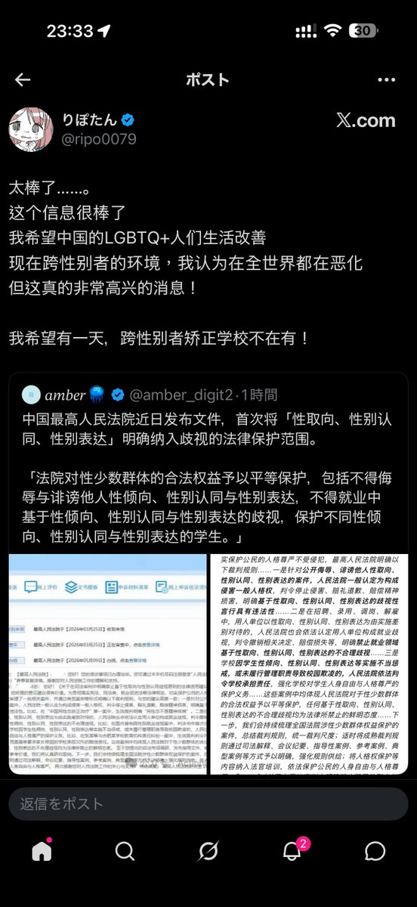

サイバー環状線
@CyberKanjousen
@k0rnblumeR @SakurabaEma_ITN 唔……「整天在讚美中國」吗？但是環状線查看了她近 7 天发表的推文，似乎并不符合这一点呢。如果環状線有看漏的话还请指出喵。

コーンブルメ ❄️
@k0rnblumeR
妳告訴我這個人整天在讚美中國是真心的還是流量變現？那根本就不是什麼跨性別矯正學校，那是戒網癮、那是不聽（父母）話、”問題少年”、”叛逆孩子”會被在家裡或者路上直接被綁架被關進去的準軍事化管理監獄，整個中國內地到處都是這種設施，被媒體曝光之後也一直持續的到處轉移並且正常運營。 https://t.co/QEXA2EEG2b https://t.co/0sPkUeCHfv